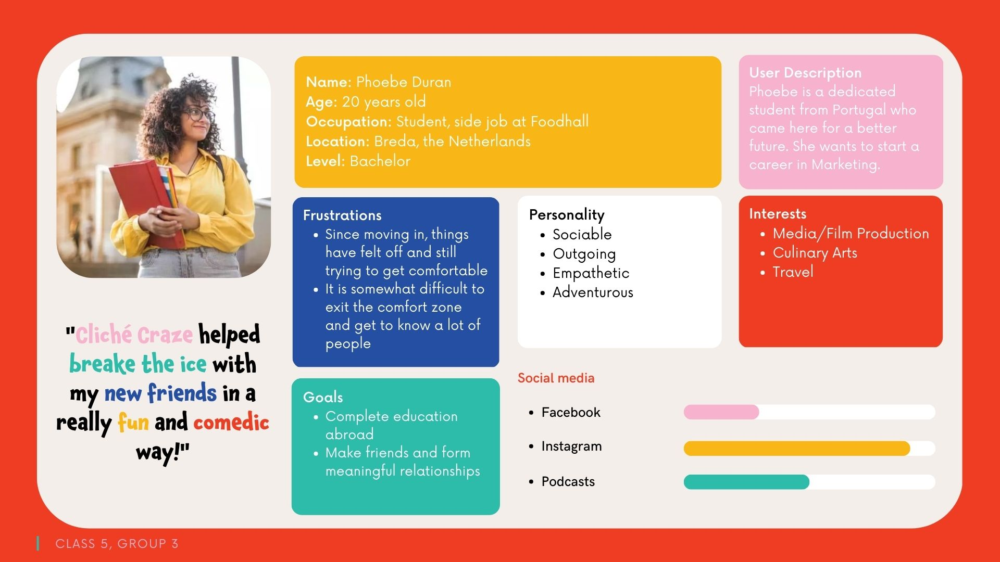

Management
Lean Canvas
Problem
We found that our target audience mainly faces the following problems.
- New environment: Even though these students made the choice to move to a completely new environment, this does not make the process easier. They were still in a completely new world and didn't know what to do.
- Social anxiety: Some students were coping with social anxiety, this did not help them in their journey of meeting new people. They had no idea what to talk about with people and what to bond over. Making it hard for them to start conversations.
- No familiar people: While the resason of a number of students decided to study in another country was to be more independent, the first few weeks they depended very heavily on the contact they had with the people back home. This was because they did not know anyone in the place they had moved to.
These students used the following solutions that already exist..
- School events: Schools organise several events, such as international day and introweek, where people can meet eachother and find possible new friends who went through the same process.
- Connection with friends and family at home: Like mentioned before, many students have extensive contact with familiar people from back home whoch helps them go through this lonely and hard time.
- Various card games: There are many card games on the market, also some very popular ones for this specific target audience. Think Cards Against Humanity and Uno.
Solution
- In order to create a fun experience for our target audience, we will create a card game they can use to break the ice. This card came will be available both on- and offline. As we believe humor is the perfect way to break the ice, the cards display various stereotypes that the players can spend their night guessing and getting to know about. And of course, it can be turned into a drinking game.
Customer segments
- Psychographic: Our target audience has a low social status. However, they are very dedicated to their school and work in order to change this. As they moved this far from home they are very open-minded, social and adaptable. This helped them find a better eduation and proof their independance. Their day-to-day life is filled with school, work, social events with friends and exporing. This all while they keep a close eye on their expenses which is mainly put into Physical, safety, secturity and social needs
- Geographic: Our target audience is from all over the world, but are currently located in Breda, a city in he Netherlands.
- Demographic: Being a game for all students, our demographics are pretty wide, only having a limited focus on people with ages from 18 to 25. They are working on their bachelor degree while owning minimum-wage at side-jobs.
- Technographic: Our target audience mainly uses social media platforms, Instagram, Facebook, TikTok and Snapchat. Next to that they Google everything and also use the internet for their purchaches. Finally, they own a mobile phone and a laptop.

Unique value proposition
- A card game with a hilarious twist.
Unfair advantage
- On- and offline editions: We will release this card game both on- and offline, this way our users can choose whatever their own preference is. The online version is more portable, while the offline version is traditional.
- Expansion packs: Our card game is not done with just one version, in order to keep the game updated we will release more expansion packs as time goes on. It will never get boring.
- Easy access to target audience: Being students ourselves, we have a very easy access to our target audience, this way we keep being up to date about their needs and can spread the game more easily.
Channels
- Social media: Our target audience mainly uses Instagram and Facebook as their way of communicating. Our target audience mentioned taht especially Instagram has an impact on their consumer behaviour.
- Direct selling: We sell our products online via our own website.
- Indirect selling: Next to that, we will also distribute our products via retailers and marketplaces such as Intertoys and Bol.com.
Key metrics
- Increase the knowledge and awareness about Cliché Craze by having reached 200 students by the end of April 2023
- Increase feeling of positivity, excitement, and curiousity of Cliché Craze which will be monitored by comments on social media.
- Have a 35% response rate in the form of active website visits based off the click rate before the end of the April 2023.
Revenue streams
- Our revenue stream consists of asset sales, the consumer pays a standard price of €14,99 for each product either directly or indirectly to us.
Cost structure
- Our cost structure will be cost driven and eventually turned into an economy of scopes as we produce more games.
- Fixed costs: Our fixed costs consist of the rent of our workpace, insurance, loan repayments, business licenses, equipment and subscriptions.
- Variable costs: Our variable costs consist of goods sold, raw materials and inputs to production, packaging, commissions, utility bills, labor and credit card fees
- Based on the production fees of our supplier, the cost per unit will be €2,12. This is based on a production of 500 copies of the Sample Card Deck.
Services/products
- Our product will be the Cliché Craze Card Game, a game which will help break down barriers between friends of various cultures and create an overal humurous experience for all players involved.
- We focus on the fun and playfulness of the card game, which we communicate through our visual brand.
Validation of Assumptions
We started this process with a focus on wanting to provide expats the service of helping them with their moving document etc. However, after the problem interviews we noticed that loneliness was the main problem students faced. This was because they already got help with their arrangements from either another organisation or school. They really needed something that could help break the ice with others in order to make new friends. They mentioned that existing events such as the intro week really helped them as you do teambuilding activities here and get to know each other on a personal level, before diving into the school work. Together with the fact that they mentioned liking to go out with friends and humor being the ultimate icebreaker for them, we came up with the idea of Cliché Craze Games. A fun card game that makes use of stereotypes that friends can play before or instead of going out. As card games such as Cards Against Humanity and Joking Hazard, which are also based on dark humor, are very populair among this generation, we believe that this concept acts as a perfect solution for the problem of our target audience.
Due to the fact that we have changed our concept a bit we have slight differences each lean canvas model. With the help of the problem and solution interviews as well as research for other classes such as content, we have come to the final lean canvas which aligns with the needs and preferences of our target audience.
Appendix
-
Lean Canvas #1
-
Lean Canvas #2
-
Lean Canvas #3
-
Interviews